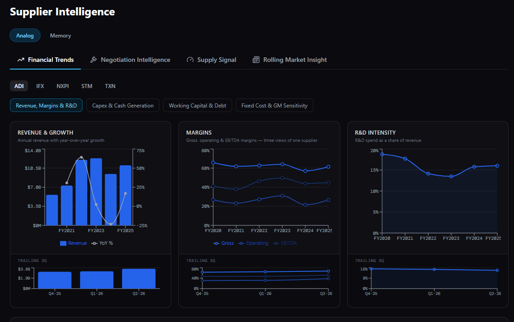
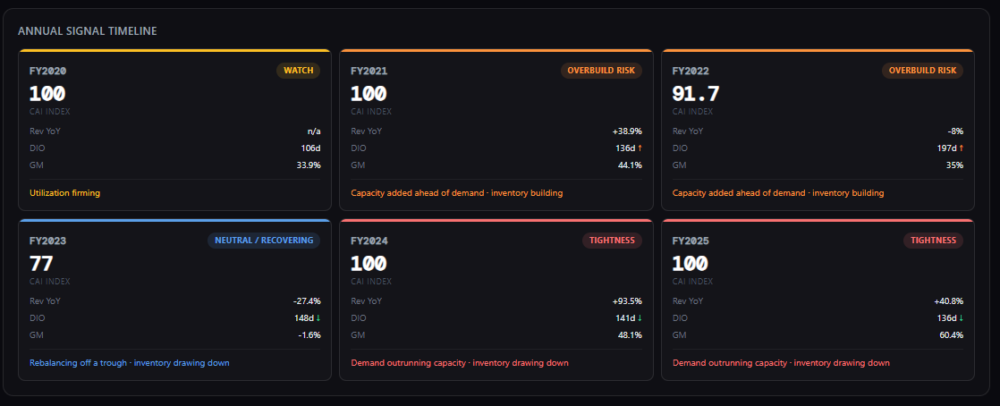

01
Financial Trends
Revenue, margins, cash flow, inventory and capex across your supplier universe — annual trends with trailing quarterly updates, and commentary grounded in management's own words.
Semitrical turns a chip supplier's SEC filings, earnings transcripts and investor presentations into procurement intelligence — so a five-person team walks into every negotiation with the same depth the supplier's own commercial team has.

Financial Trends · six years plus trailing quarters, from the supplier's own filings
The asymmetry
A supplier's commercial team spends all of its time on pricing and contract strategy for their product lines. Your team splits that same attention across tens of suppliers, hundreds of part numbers and overlapping contract cycles.
The supplier knows their margin structure, their capacity position and their inventory levels. They price to the edge of what the market will accept. Semitrical gives your team the same read — from the same public data the supplier uses internally.
The platform
A live platform your team logs into — not a one-time report. Updated quarterly as suppliers file. Ask questions and generate editable reports for your leadership.
01
Revenue, margins, cash flow, inventory and capex across your supplier universe — annual trends with trailing quarterly updates, and commentary grounded in management's own words.
02
A mechanical leverage score per supplier across four financial dimensions — revenue pressure, margin compression, fixed-cost burden and cash-flow stress. No subjective weighting.
03
A directional read on supply tightness against excess capacity, computed from each supplier's revenue efficiency against their installed asset base. It separates a genuine shortage from a supplier's bluff.
04
News filtered for procurement impact and tagged by supplier, so the picture stays current between quarterly filings rather than going stale the day after results.
Live signal — from the platform
SK Hynix, read across six years. Capacity Absorption Index at 100 for two consecutive years, revenue up 40.8% with inventory days falling, and gross margin at 60.4%. Management has said on its own calls that it is not adding capacity ahead of demand.

Annual signal timeline · overbuild risk, trough, then tightness two years running
What you take away
The platform is always on. When you need to present upward, export to formats your leadership already expects.
Your team logs in, selects a supplier, and gets the full picture — financial trends, leverage score, capacity signal, and an analyst that answers questions from the filings rather than from memory.
A supplier position report as a sourced PDF, with a page written for your finance director. Every line traces to a filing and carries the date it was checked.
Choose your action
No contract and no NDA required to start. Send a list of your suppliers and get an intelligence read back.